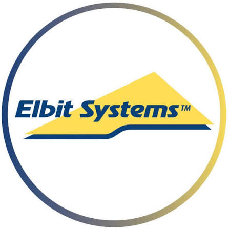
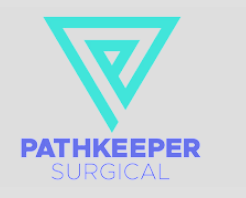

A Briefing for Privacy, AI & Cyber Counsel · EDPB Guidelines 03/2026
Your Clients Now Need Dataset Evidence.
We Generate It — On Their Premises.
The EDPB's web-scraping guidelines turn AI training data into an audit target. Legal advice tells clients what to demonstrate; SBOMator DataBOM produces the technical artifacts they demonstrate it with.
Who We Are
ESL — Verification Tooling for Regulated, Safety-Critical Software
- Engineering Software Lab (ESL) builds and delivers verification and compliance tooling for industries where software failure is not an option — and where regulators already demand evidence, not assurances.
- Medical / FDA: premarket cybersecurity submissions already require an SBOM. We generate and validate them for medical-device manufacturers.
- Automotive: ISO 26262, ISO 21434, MISRA / CERT, ASPICE — static analysis, certified unit testing, and audit-ready compliance reporting.
- Aerospace & defence: DO-178C avionics workflows and tooling deployed on disconnected, classified networks.
- Partner tooling: we are Parasoft's presence in Israel in practice, and deliver Sonatype and Perforce solutions — the same TÜV-certified toolchains used across automotive and medical.
Track Record
Trusted Where the Stakes Are Highest

Elbit Systemsdefence electronics
PathKeeper Surgicalsurgical navigation · FDA…and many more across defence, medical, automotive and industrial. These organisations run our tooling inside networks that never touch the internet.
The ESL Tool Family
One Discipline: Bills of Materials + Independent Verification
SBOMator — SBOM
Software bill of materials for firmware and applications: components, licenses, CVE matching against NVD/OSV. Fully offline.
HBOM
Hardware bill of materials for FPGA/MPSoC platforms (Xilinx Zynq UltraScale+) — the hardware side of supply-chain transparency.
AI SBOM · CISA + G7
AI/ML bill of materials aligned with CISA's SBOM for AI minimum elements and G7 supply-chain expectations.
SkillSpector
Audits AI-agent skills and plugins before they run in your environment — supply-chain scrutiny for the agent era.
HalluSquatting AI
Detects hallucinated / squatted package names that AI coding assistants invent — before they become a supply-chain attack.
DataBOM NEW
Dataset provenance scanning for AI training data — the subject of this briefing.
Methodology · Who Verifies the Verifier?
No Single AI Verdict Is Ever Load-Bearing
Counsel should ask any AI-tooling vendor this question. Our answer is public: the SPDF Control Mapping — 13 audit-ready controls, 9 threat models, 5 verification layers, built for FDA premarket cybersecurity submissions.
- Full control of Amp — our evidence-generation and orchestration layer — lets us use it as the independent verifier that audits the output of other AI tools, including Claude Code.
- Verification stack L0–L4: deterministic checks → cross-vendor oracle → named human judge → immutable evidence trail.
- Every compliance claim is backed by a deterministic, re-checkable artifact — the same philosophy DataBOM applies to datasets.
- Grounded in algorithmic-auditing literature on auditor independence (FAccT '22) — directly relevant to how regulators will assess AI-assisted compliance work.
The Regulatory Shift
Guidelines 03/2026: Public Data ≠ Free Training Data
- Adopted 7 July 2026; public consultation until 30 October 2026. Draft interpretive guidance on existing GDPR — the enforcement direction, even before final adoption.
- Public accessibility of personal data is not, by itself, a legal basis for AI training use.
- Scope covers organisations that scrape, that instruct scrapers, and that acquire already-scraped datasets — your clients inherit the burden with the data.
- Untargeted crawling without collection criteria and demonstrable minimisation is now much harder to defend.
The Advisory Pattern
What Privacy Practices Are Already Telling Clients
Map every training dataset
Inventory scraped and third-party datasets; assess by sensitivity, anti-scraping signals, and controller/processor roles.
Validate sources & timestamps
Establish where each record came from, when it was collected, and whether the source is legitimate.
Run legitimate-interest assessments
Necessity, reasonable expectations, minors' data, website restrictions — for existing and planned collection.
Update privacy notices
AI training purposes, data categories, precise source indication, legal basis, objection channels (Art. 14).
Steps 1 and 2 are technical work at terabyte scale. Steps 3 and 4 are legal work — that consumes the output of steps 1 and 2. That dependency is the gap.
The Gap
An LIA Without Dataset Evidence Is an Opinion
(illustrative scan)
- Nobody manually audits 1.2 million crawled records. Not the client's engineers, and not outside counsel billing by the hour.
- Cloud "data compliance" scanners solve it by uploading the dataset to a third party — creating a new Art. 28 processor, a Chapter V transfer question, and a breach surface, for the exact data you're trying to de-risk.
- In an investigation, "we believe the dataset is clean" is not a defence. A dated, itemised, machine-generated provenance report is.
- What's missing is the artifact between your advice and the client's compliance file: a bill of materials for the dataset.
The Solution
SBOMator DataBOM — Dataset Provenance, Scanned Like Firmware
The scanner architecture our defence and medical clients already trust, pointed at AI training data. Runs 100% on the client's machine — the dataset never leaves their network.
- Source inventory: every domain, record counts, first/last collection dates — searchable, as the guidelines recommend
- Syntax-based PII screening (the guidelines' own words: "e.g. regular expressions") — emails, phones, IPs, card numbers
- Art. 9 special-category indicators with sanitized review excerpts — never full records
- Provenance completeness score for prioritising remediation
In the Product
The DataBOM Tab — Next to the Firmware Scans Their Engineers Already Run
Product mockup — DataBOM tab in the ESL-SBOMator desktop application (v1.3.x UI)
Traceability for Your Compliance File
Each Report Section Maps to a Guideline Demand
| DataBOM report section | Guideline expectation it evidences |
|---|---|
| Source inventory — domains, counts, dates, searchable | Art. 14(5)(b) published source list (paras 30–31) |
| Regex PII scan — emails, phones, IPs, cards | "Syntax-based filtering mechanisms (e.g. regular expressions)" (para 38) |
| Art. 9 keyword indicators with sanitized excerpts | Post-collection detection of special-category data (para 68) |
| Timestamp coverage metric | Accuracy — "timestamp the data" (para 42) |
| Full report + CycloneDX ML-BOM | Art. 5(2) accountability record for the dataset (para 16) |
DataBOM output is evidence for the compliance file your firm builds — it is not legal advice and not a compliance certification. The legal judgment stays with counsel.
Honest Scope — Ask Any Vendor for This Slide
What We Solve, What We Share, What Stays With You
The evidence layer
- Source list generation (Art. 14(5)(b))
- Syntax-based PII screening (para 38)
- Dataset accountability record (Art. 5(2))
Detection, not judgment
- Art. 9 indicators are keyword screens — legal classification is counsel's
- Timestamps measured; source reliability assessed by the client
- Remediation (deletion / anonymisation) stays in the client's workflow
Lawyer-shaped problems
- Legitimate-interest balancing (Art. 6(1)(f))
- Privacy notices, DPIAs, role allocation, vendor agreements
- robots.txt / ai.txt checks — roadmap, as an optional online step
Our positioning is deliberate: DataBOM makes the dataset provable; counsel makes it lawful. We are the technical half of your advisory, not a competitor to it.
Why Local Matters
Built for Defence Contractors. Accidentally Perfect for GDPR.
SBOMator was engineered for classified, disconnected networks — IAI, Elbit, Rafael-grade environments where no data may ever leave the premises. That same architecture eliminates GDPR exposure by construction:
Art. 28 — No processor, no DPA
ESL never touches the client's data. Nothing to negotiate, no sub-processors to audit, no vendor risk assessment for the dataset.
Ch. V — No transfer
Nothing crosses a border because nothing crosses the firewall. No SCCs, no adequacy analysis, no TIA.
Art. 32 — Inherited controls
Security of processing inherits the controls the client already certified: disk encryption, access control, physical security.
Offline — True air-gap support
Vulnerability and metadata databases install from offline bundles. Disconnected networks are a supported configuration, not an afterthought.
Site license + support agreement. No per-scan metering, no usage telemetry — there is no "home" for the software to phone.
Working With Counsel
What This Looks Like in Your Practice
- Your client engagement: you advise the mapping / LIA / notice workflow. DataBOM produces the dataset inventory and screening evidence your workflow consumes — in days, not months.
- Your deliverable improves: LIAs and DPIAs cite a dated, itemised, machine-generated provenance report instead of client self-attestations.
- Privileged-friendly: because the scan runs on the client's own machines, the raw dataset is never disclosed to us or anyone else — only the report enters the file.
- You shape the roadmap: detectors and report sections are extensible. If your practice needs minors-data indicators, opt-out signal audits, or specific Art. 9 categories — that is prospect-driven engineering we do with you.
Consultation Closes 30 October 2026
Help Your Clients Know Their Data
Like They Know Their Code
Talk to us about dataset provenance evidence for your clients — or a joint briefing for your privacy & AI practice.
Contact ESLeswlab.com/contact-us · SBOMator product page · SPDF Control Mapping